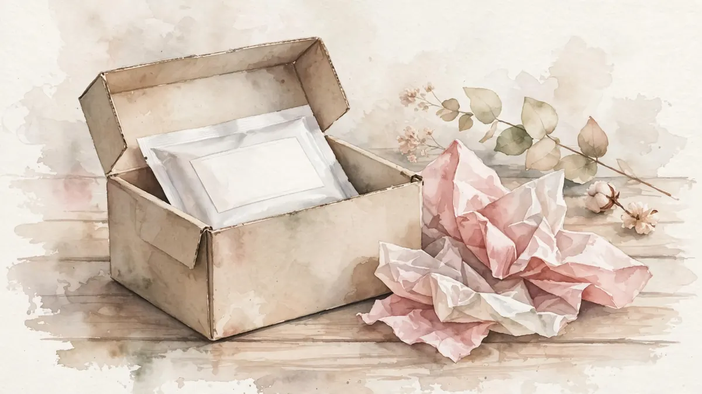

トップ ＞ インナーケア・サプリ ＞ 返品・交換の条件表示の読み方
返品・交換の条件表示の読み方

通販でサプリメントを買うとき、返品や交換の条件は「何かあったとき」の話として後回しにされがちです。しかし食品であるサプリメントには、返品に独自の条件が付くことが多く、買う前に読んでおく意味があります。この記事では、返品・交換の条件表示の読み方を整理します。
条件は、複数の場所に書かれている
返品の条件は、特定商取引法の表記の中に書かれているほか、FAQや「よくある質問」、商品ページの注意書きに分散していることがあります。場所によって書かれ方が違うため、1か所だけ読んで判断しないことが大切です。特に、商品の不具合による交換と、都合による返品では、扱いが別に書かれていることが一般的です。
申し込みの最終確認画面に条件が再掲されることもあります。注文を確定する前に、その画面の条件にも目を通す習慣をつけてください。
読むポイントは「状態・期限・送料」
確認点の中心は3つです。ひとつ目は状態の条件で、「未開封のみ可」とされていることが多く、開封した場合は対象外という扱いが一般的です。ふたつ目は期限で、「商品到着後○日以内」のように連絡の期限が決められていることがあります。みっつ目は送料の負担で、都合による返品では購入者負担とされることが多いです。
定期購入の「返金保証」をうたう案内がある場合は、その条件をよく読んでください。対象が初回分のみか、申請の期限、手続きの方法、返送が必要かどうかで、実際の使い勝手は変わります。保証の言葉だけでなく、条件の細部が判断材料です。
控えを残すことが、後の手続きを楽にする
注文確認メールと、購入時点の条件ページの控え（画面の保存など）を残しておくと、条件の解釈で行き違いがあったときに照らし合わせができます。商品が届いたら、期限内に開封状態と中身の確認を済ませることも大切です。不具合に気づくのが遅れると、期限の条件に触れることがあります。
返品の条件は、トラブルが起きてから読むものではなく、買う前に読んでこそ意味があります。価格や内容量と同じ並びの確認点として、買い物の手順に入れておいてください。
店頭で買った場合も、控えは同じ
返品や交換の考え方は、店頭購入でも大きくは変わりません。レシートは、購入日と店舗を証明する控えとして、使い切るまで保管しておくと安心です。商品の状態についての相談は、購入した店舗か、メーカーの窓口が入口になります。その際も、ロット番号や賞味期限を手元に用意しておくと話が早くなります。
連絡をする場合は、日時と、対応してくれた担当者の名前、案内された内容をメモに残してください。条件の確認、控えの保管、早めの連絡。この3つがそろえば、返品や交換の手続きは慌てずに進められます。条件表示は、売る側と買う側の約束事を書いたものです。買う前に読む習慣が、双方の行き違いを防ぎます。
なお、開封してしまった場合は対象外になることが多いため、「試しに開けてみる」前に、返品の可能性が残っているかどうかを考える順番も大切です。少量サイズで試す買い方は、こうした条件の面からも合理的です。
条件表示の中で見落とされやすいのが、「返品の連絡方法」です。電話のみか、フォームからも可能なのかで、手続きの手間は変わります。受付時間の案内もあわせて確認しておくと、期限内に連絡を済ませやすくなります。
交換の場合は、交換品の発送時期や、在庫がない場合の扱いが書かれていることもあります。返品と交換は似た手続きですが、条件は別々に読むのが基本です。買う前の数分の確認が、後の手続きの慌てを防ぎます。条件は、店舗や販売の形ごとに異なります。
セラフィナ「返品の条件は、買う前に読んでこそ意味があるんだね」

セラフィナ｜美容の道具箱の案内役
「量と表示が分かれば、美容は失敗しない。」——セラフィナと白猫のモコが、買う前のチェックポイントを案内します。綺麗になりたい気持ちに正直に、でも表示は冷静に読むのが、このサイトの約束です。